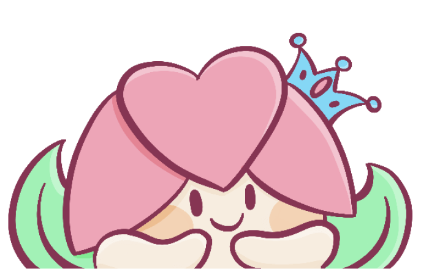

Momojitchi
Cute merchandising and illustration
Former UX Designer, now dedicating my days to design and create cute things.
You can know where to find me thanks to all the links on this page. Every likes and follow counts, thank you so much!